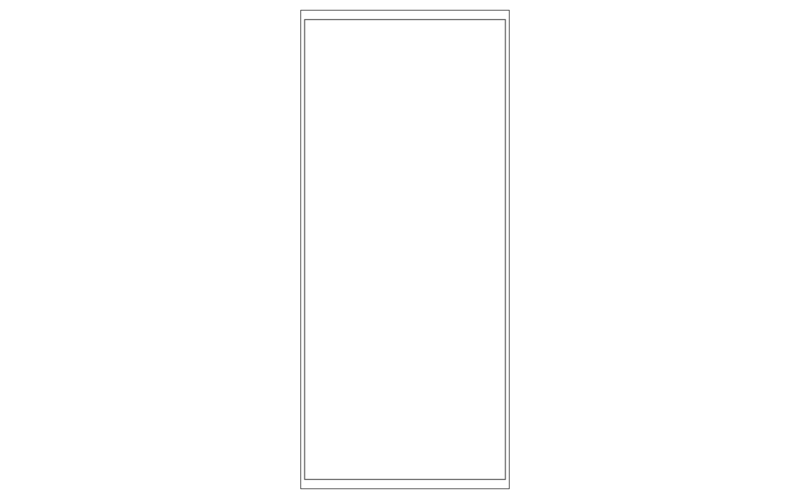
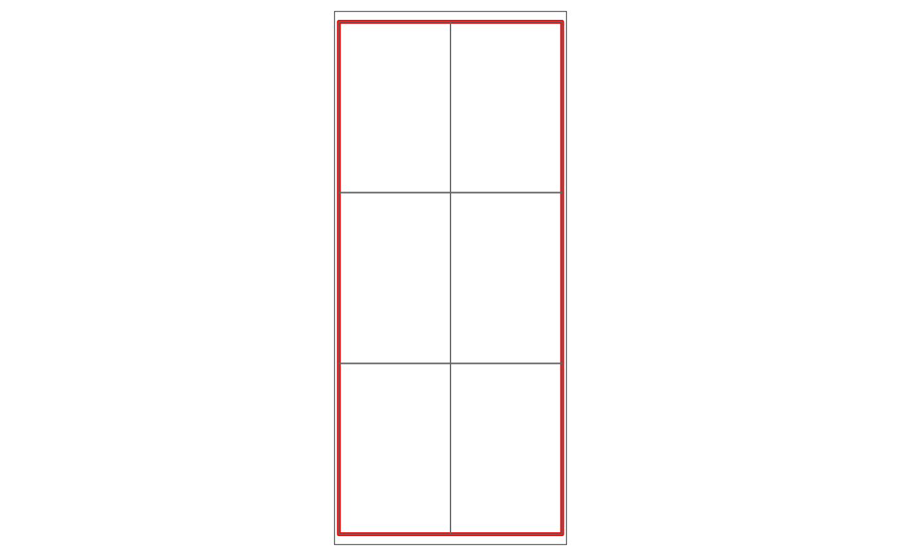
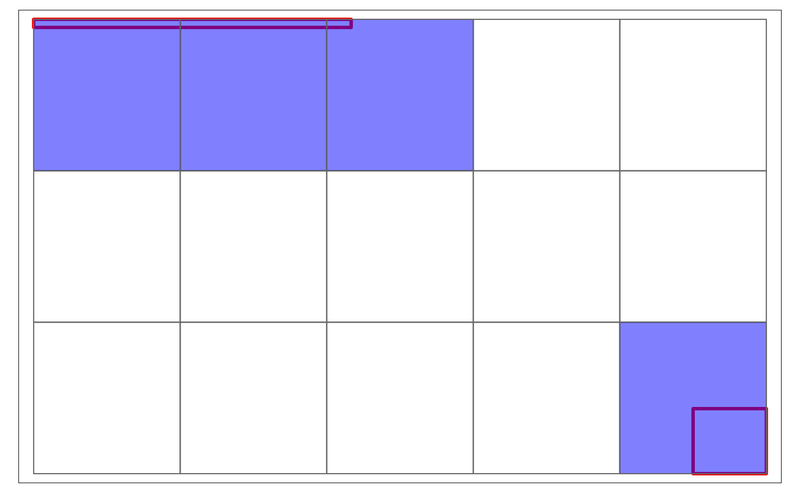

Resolution for raster
Source:vignettes/web_only/resolution_for_raster.Rmd
resolution_for_raster.Rmd
knitr::opts_chunk$set(warning = FALSE, message = FALSE)
library(happign)
#> IGN web service API is available.
#> Last news from IGN website : "Incident en cours (Résolu)" on 2022-05-24 (https://geoservices.ign.fr/actualites/2022-05-24-actu-incident)
library(stars)
#> Loading required package: abind
#> Loading required package: sf
#> Linking to GEOS 3.9.1, GDAL 3.3.2, PROJ 7.2.1; sf_use_s2() is TRUE
library(sf)
library(tmap)The limitations of the IGN API
The APIs of the IGN allow to manipulate the resolution of the raster by specifying the height and width of the image in number of pixels. Let us imagine a cube of 5000m by 5000m. To obtain a resolution of 2m (in other words 1 pixel = 2m), it will then be necessary to make a request such that the height and width of the raster is equal to 2500.
However, these two parameters are limited to 2048x2048, in other words, if we want a resolution of 1m on an area larger than 2048, we will have to split our area into several tiles. This is exactly how get_wms_raster() works.
How it work ?
First step
Lets take a zone larger than 2048x2048m to illustrate.
polygon <- st_sfc(st_polygon(list(matrix(c(-4.327240, 47.81416,
-4.327240, 47.91364,
-4.262695, 47.91364,
-4.262695, 47.81416,
-4.327240, 47.81416),
ncol = 2, byrow = TRUE))), crs = st_crs(4326))
tm_shape(polygon)+
tm_borders()
Second step
Width and height of the shape is computed to find how many tile we need to match the resolution. In this case we will take a resolution of 2m.
resolution <- 2
bbox <- st_bbox(polygon)
height <- st_linestring(rbind(c(bbox[1], bbox[2]),
c(bbox[1], bbox[4])))
width <- st_linestring(rbind(c(bbox[1], bbox[2]),
c(bbox[3], bbox[2])))
width_height <- st_length(st_sfc(list(width, height), crs = 4326))
nb_pixel <- as.numeric(ceiling(width_height/resolution))
n_tiles <- as.numeric(ceiling(nb_pixel/2048))
n_tiles
#> [1] 2 3Third step
In this example we need 2x3 tiles which mean 6 tiles to cover all of our shape. To create this tiles, happign use the st_make_grid() function from sf package in which it is possible to specify the number of tiles desired.
grid <- st_make_grid(polygon, n = n_tiles) %>%
st_as_sf() %>%
st_as_sfc()
tm_shape(polygon)+
tm_borders(lwd = 3, col = "red")+
tm_shape(grid)+
tm_borders()
Step four
The height and width of one tile are calculated to build the 6 IGN API queries.
tile1 <- st_bbox(grid[[1]])
height <- st_linestring(rbind(c(tile1[1], tile1[2]),
c(tile1[1], tile1[4])))
width <- st_linestring(rbind(c(tile1[1], tile1[2]),
c(tile1[3], tile1[2])))
width_height <- st_length(st_sfc(list(width, height), crs = 4326))
nb_pixel <- as.numeric(ceiling(width_height/resolution))
nb_pixel
#> [1] 1205 1844Step five
all tiles are downloaded then merge with st_mosaic function from stars packages. After merging, all tiles are deleted from disk and the final raster is saved.
Bonus step
To optimize the number of tiles to download, an intersection is made in the case of mulipolygon or particular shapes
multipolygon <- st_sfc(st_polygon(list(matrix(c(-4.496155, 47.92191,
-4.496155, 47.92375,
-4.389038, 47.92375,
-4.389038, 47.92191,
-4.496155, 47.92191),
ncol = 2, byrow = TRUE),
matrix(c(-4.273682, 47.82066,
-4.273682, 47.83541,
-4.248962, 47.83541,
-4.248962, 47.82066,
-4.273682, 47.82066),
ncol = 2, byrow = TRUE))), crs = st_crs(4326))
# Tile calculation
resolution <- 2
bbox <- st_bbox(multipolygon)
height <- st_linestring(rbind(c(bbox[1], bbox[2]),
c(bbox[1], bbox[4])))
width <- st_linestring(rbind(c(bbox[1], bbox[2]),
c(bbox[3], bbox[2])))
width_height <- st_length(st_sfc(list(width, height), crs = 4326))
nb_pixel <- as.numeric(ceiling(width_height/resolution))
n_tiles <- as.numeric(ceiling(nb_pixel/2048))
grid <- st_make_grid(multipolygon, n = n_tiles) %>%
st_as_sf()
filter_grid <- grid %>%
st_filter(multipolygon, .predicate = st_intersects) %>%
st_as_sfc()
tm_shape(multipolygon)+
tm_borders(lwd = 3, col = "red")+
tm_shape(grid)+
tm_borders()+
tm_shape(filter_grid)+
tm_polygons(col = "blue", alpha = 0.5)